Cycle de vie complet d'une instance de gouvernance projet — de la création du point à la diffusion du compte-rendu. Vingt écrans détaillés : rôle, zones, données, actions, règles de gestion, transitions.
Un point traverse cinq états dans un ordre strict. Chaque transition est déclenchée par une action explicite ou par le temps — jamais implicitement.
Le type choisi à la création pilote l'ordre du jour type, la durée, la récurrence, les participants proposés et la règle de propagation appliquée. Le typage porte des règles métier, pas une couleur.
| Type | Intitulé | Cadence | Durée | Audience | Objet de la séance | Règle de propagation |
|---|---|---|---|---|---|---|
| COPROJ | Comité projet | Hebdomadaire | 45 min | Équipe projet | Suivi opérationnel : avancement, blocages, actions de la semaine | Reporte les actions ouvertes du point précédent |
| COPIL | Comité de pilotage | Mensuel | 1 h 30 | Sponsors et chefs de projet | Pilotage : synthèse, budget, risques majeurs, arbitrages | Consolide les COPROJ tenus depuis la séance précédente |
| COTECH | Comité technique | Bimensuel | 1 h | Architecture et SSI | Dette technique, sécurité, intégrations, choix structurants | Remonte les objets Atlas en risque critique |
| CODIR | Comité de direction | Trimestriel | 2 h | Direction générale | Cap stratégique, portefeuille, budget consolidé | Remonte les décisions en attente d'arbitrage |
| Revue | Revue de portefeuille | Semestriel | 3 h | Direction et PMO | Priorisation projet par projet, capacité, réallocations, Go/No Go | Charge la vue Capacité et les scénarios budgétaires |
| Ad hoc | Point ponctuel | Ponctuel | 30 min | Cercle restreint | Incident ou décision urgente, hors cadence | Ne génère aucune série, reste rattaché au cycle projet |
Une séance produit quatre natures d'objets. Chacun a une destination hors de la séance : c'est ce qui distingue un compte-rendu d'un procès-verbal mort.
Choix acté en séance, avec sa portée. Peut être routée en action, en risque, ou en sujet à remonter au niveau supérieur.
Tâche avec porteur et échéance. Créée en séance ou dérivée d'une décision. Bloque la diffusion du CR si elle n'a pas de porteur.
Point soumis à verdict : adopté, rejeté ou reporté. Un arbitrage sans verdict bloque la clôture de la séance.
Menace identifiée en séance, qualifiée par un niveau. Saisie directe ou dérivée d'une décision.
Règles applicables à tous les écrans de la brique, indépendamment du type d'instance et du point d'entrée.
Onglet « Points projet » de la fiche projet. Un point traverse cinq états et s'appuie sur des séries pour sa cadence. Onze écrans, de la file de préparation à l'archive.
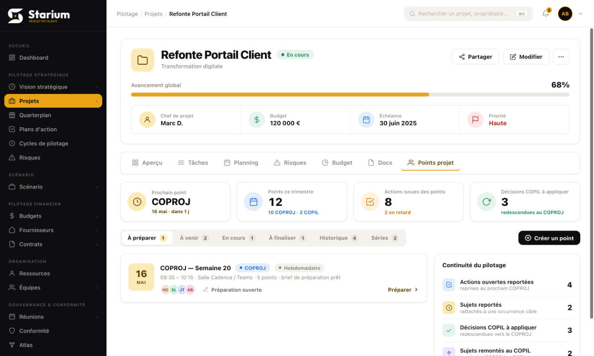
Point d'entrée de la brique. L'onglet regroupe toutes les instances de gouvernance rattachées au projet, filtrées par état d'avancement. Le sous-onglet « À préparer » isole les séances dont l'ordre du jour n'est pas encore figé — c'est la file de travail du chef de projet.
Onglet « Points projet » de la fiche projet, ou notification d'un point à préparer.
Écran de préparation (08), ou modale de création (07).
Vide si aucune séance à préparer — message d'état vide, bouton de création mis en avant.
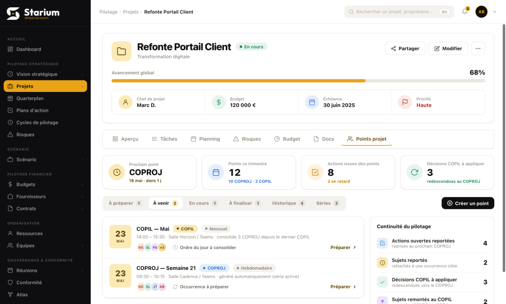
Séances planifiées dont la préparation est terminée. Aucune action n'est requise à court terme : l'écran sert à vérifier la cadence réelle et à anticiper la charge de gouvernance des prochaines semaines.
Ordre du jour figé depuis l'écran de préparation.
Passage automatique en « En cours », ou retour en préparation.
Une séance dont l'heure est dépassée sans démarrage reste affichée, signalée en retard.
Séances démarrées et non closes. Un seul point est normalement en cours à un instant donné : l'écran sert autant à reprendre la conduite qu'à détecter les séances jamais clôturées.
Démarrage de la séance depuis l'écran de préparation, ou heure de séance atteinte.
Écran d'animation (09), puis « À finaliser » à la clôture.
Séance non clôturée depuis plus de 24 h → alerte au chef de projet.
Séances tenues dont le compte-rendu n'est pas encore validé ni diffusé. C'est la file d'attente de la gouvernance : tant qu'un point est ici, ses décisions ne sont pas opposables et ses actions ne sont pas engagées.
Clôture de la séance depuis l'écran d'animation.
Diffusion du CR → bascule en « Historique ».
Blocage explicite si un contrôle de complétude échoue, avec la liste des éléments manquants.
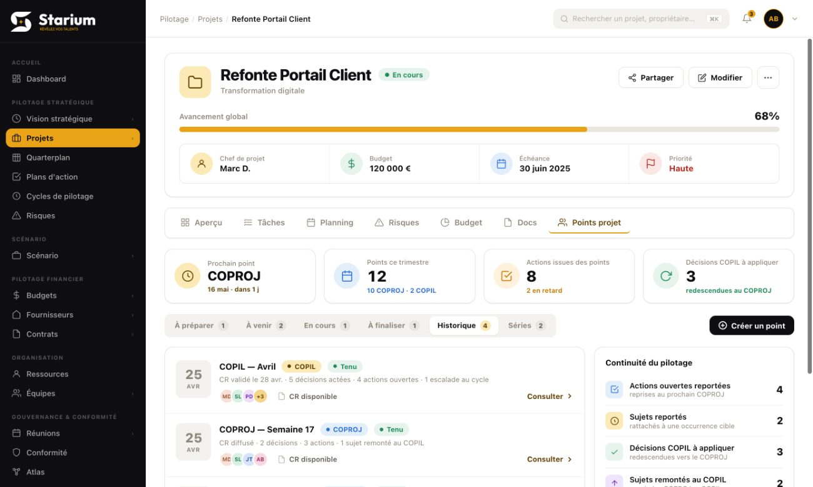
Archive des séances closes, compte-rendu validé et diffusé. Constitue la piste d'audit de la gouvernance projet : qui a décidé quoi, quand, en présence de qui.
Diffusion du compte-rendu.
Consultation seule. Les actions vivent dans le plan d'action projet.
Un rectificatif s'affiche comme une entrée liée à la séance corrigée, sans écraser l'original.
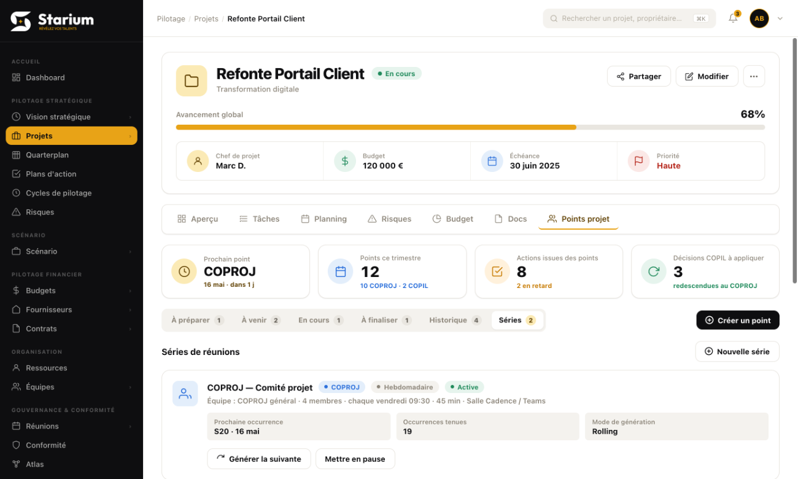
Définition des cadences récurrentes plutôt que des séances unitaires. Créer une série évite de recréer chaque point à la main et garantit la régularité de la gouvernance.
Cadrage de la gouvernance en début de projet.
Les séances générées apparaissent dans « À venir ».
Série suspendue affichée en atténué, avec la date de suspension.
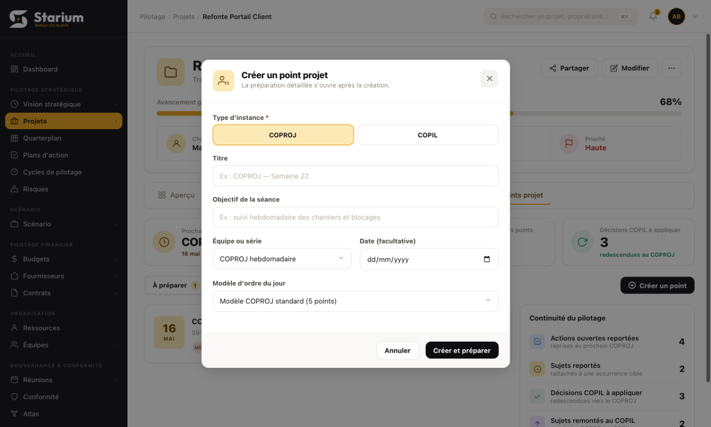
Création unitaire d'une séance rattachée au projet courant. Le type d'instance choisi pilote l'intégralité des valeurs par défaut : ordre du jour, durée, participants.
Bouton « Créer un point » de la barre de sous-onglets.
Point ajouté à « À préparer », ou ouverture immédiate de la préparation.
Validation bloquée si le type ou la date manquent.
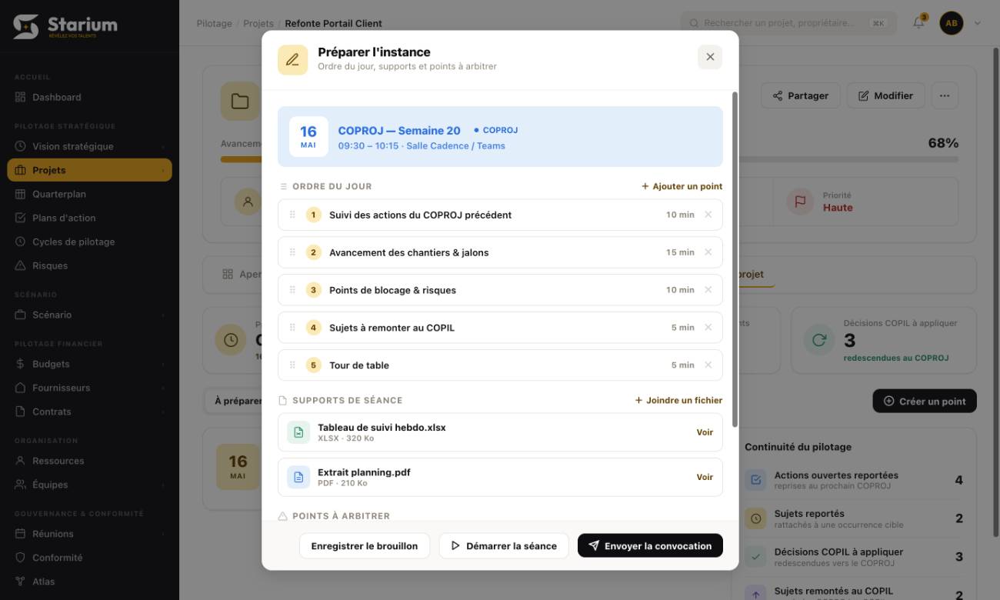
Construction de l'ordre du jour avant la séance. C'est ici que se joue la qualité du comité : un ordre du jour typé, minuté et porté produit une séance qui décide.
Lien « Préparer » depuis la liste, ou « Créer et préparer » depuis la modale.
Ordre du jour figé → le point passe en « À venir ».
Avertissement si la durée cumulée dépasse la séance ou si un point de décision n'a pas de porteur.
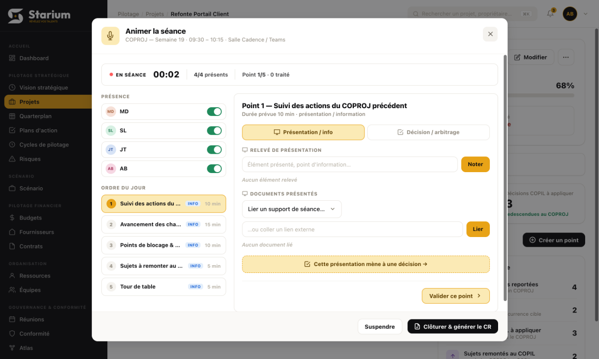
Animation live du comité : on déroule l'ordre du jour et on saisit au fil de l'eau. L'objectif est qu'à la fin de la séance le compte-rendu soit déjà écrit.
Démarrage ou reprise depuis « En cours ».
Dernier point clos → clôture → passage en « À finaliser ».
Dépassement de durée signalé sur le point courant, sans blocage.
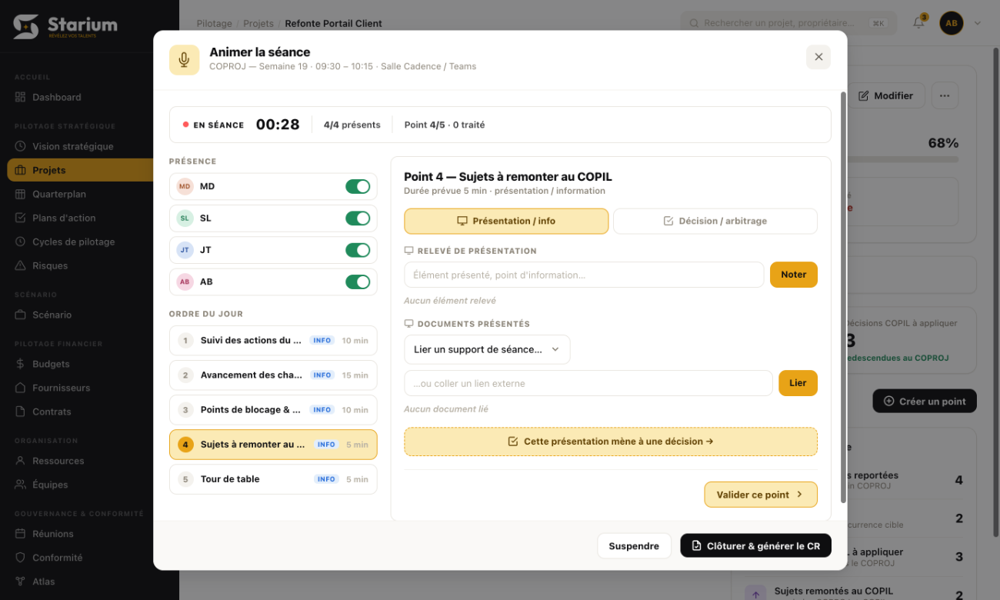
Point d'ordre du jour dédié à l'articulation entre les niveaux de gouvernance. C'est le mécanisme qui évite que les sujets se perdent entre le comité opérationnel et le comité de pilotage.
Point « Sujets à remonter » de l'ordre du jour d'un COPROJ.
Ordre du jour du COPIL pré-alimenté, sans intervention manuelle.
Si aucun COPIL n'est planifié, le sujet est mis en attente et signalé.
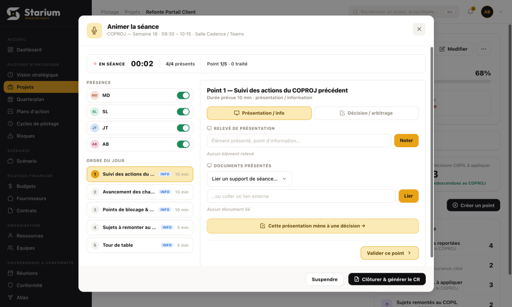
Relecture et diffusion du compte-rendu après la séance. Le CR est généré depuis la saisie live : rien n'est retapé, on relit et on complète.
Lien « Finaliser » depuis la liste des points à finaliser.
CR diffusé → point archivé en « Historique ».
Diffusion bloquée tant qu'un contrôle de complétude échoue.
Vue « Cycles de pilotage », hors fiche projet. Création typée en un clic, consolidation entre niveaux de gouvernance, calendrier de cadence. Neuf écrans.
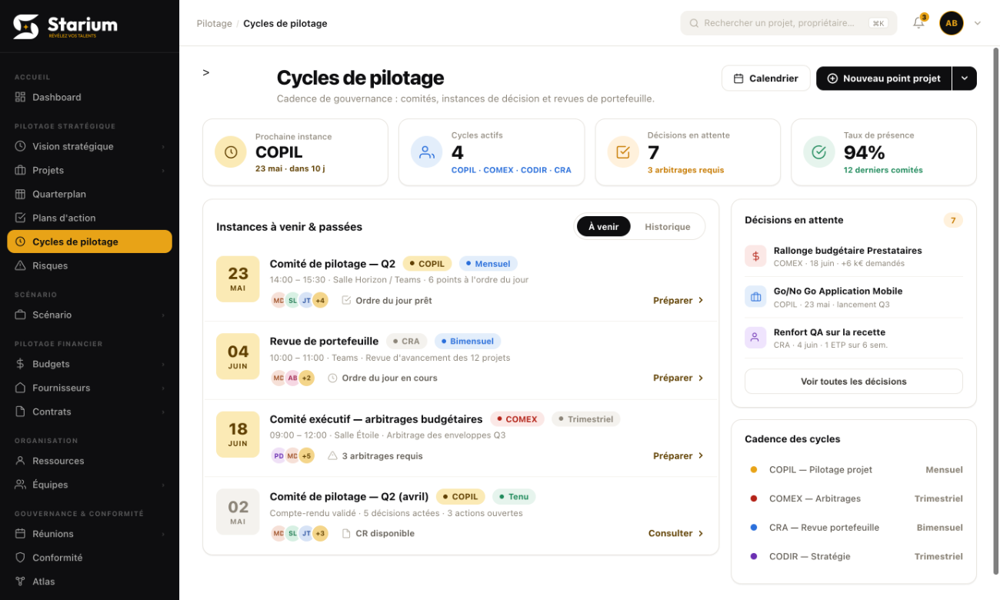
Vue transverse, hors fiche projet : toutes les instances de gouvernance, tous projets confondus. C'est l'écran du responsable de la gouvernance, pas du chef de projet.
Entrée « Cycles de pilotage » du menu Gouvernance & conformité.
Préparation, consultation de CR, calendrier, ou création typée.
Instance en retard de tenue signalée dans la liste.
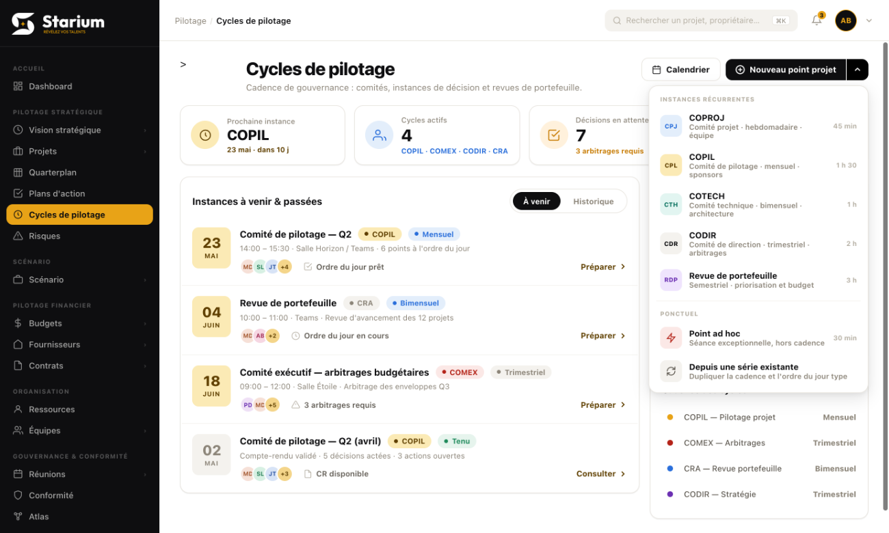
Split button : l'action la plus fréquente est immédiate à gauche, le choix du type est sous le chevron. Le composant évite d'imposer une modale pour un choix qui peut se faire dans le menu.
Barre d'actions de la vue Cycles de pilotage.
Modale de création pré-configurée selon le type choisi.
Menu ouvert : fond du chevron assombri, ombre portée sur le panneau.
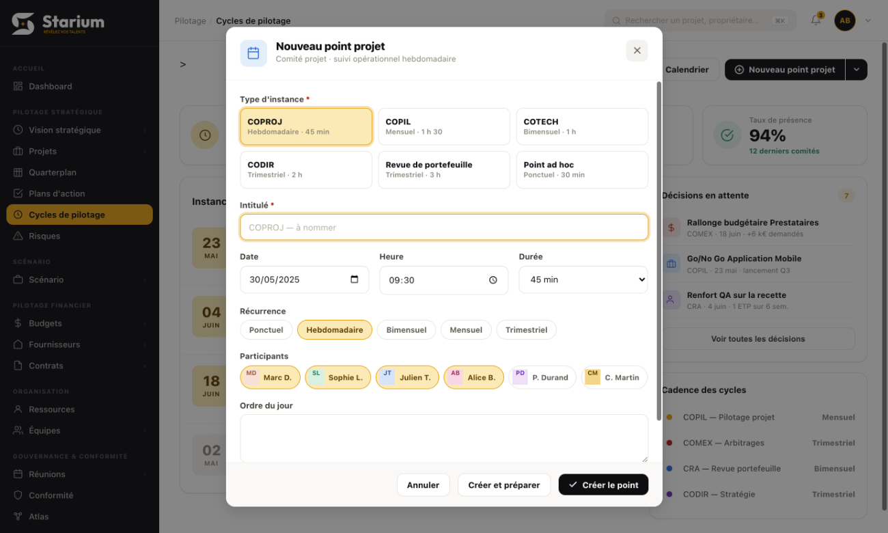
Création d'un comité projet. Toute la modale est pré-remplie par le type sélectionné : l'utilisateur valide plus qu'il ne saisit.
Clic principal du split button, ou entrée COPROJ du menu.
Point ajouté en tête de liste avec son badge de type.
Champ intitulé focalisé à l'ouverture ; fermeture par Échap, clic extérieur ou Annuler.
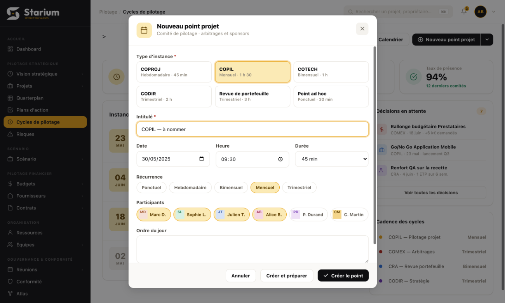
Même modale, autre type : le contenu s'adapte entièrement au niveau de gouvernance visé. La démonstration que le typage n'est pas cosmétique.
Entrée COPIL du menu typé.
COPIL créé, consolidation des COPROJ programmée pour sa préparation.
Identiques à la modale COPROJ.
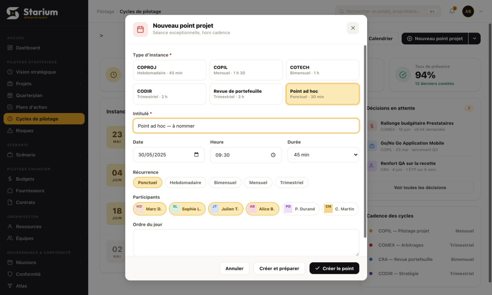
Séance exceptionnelle, hors cadence de gouvernance. Couvre les incidents et les décisions urgentes sans polluer la cadence établie.
Section « Ponctuel » du menu typé.
Point isolé, visible dans la liste, sans effet sur les séries.
Le sélecteur de récurrence est positionné sur « Ponctuel » et reste ajustable.
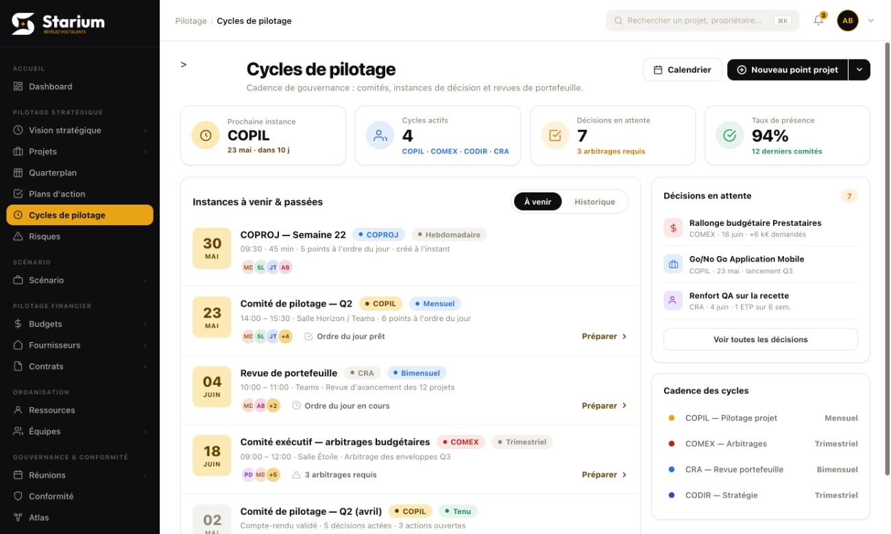
Confirmation de la création directement dans le contexte, sans changement d'écran. L'utilisateur voit le résultat de son action là où il l'attendait.
Validation de la modale de création.
Le point rejoint le cycle de vie normal, en « À préparer ».
Aucun état d'erreur : la création est validée avant fermeture de la modale.
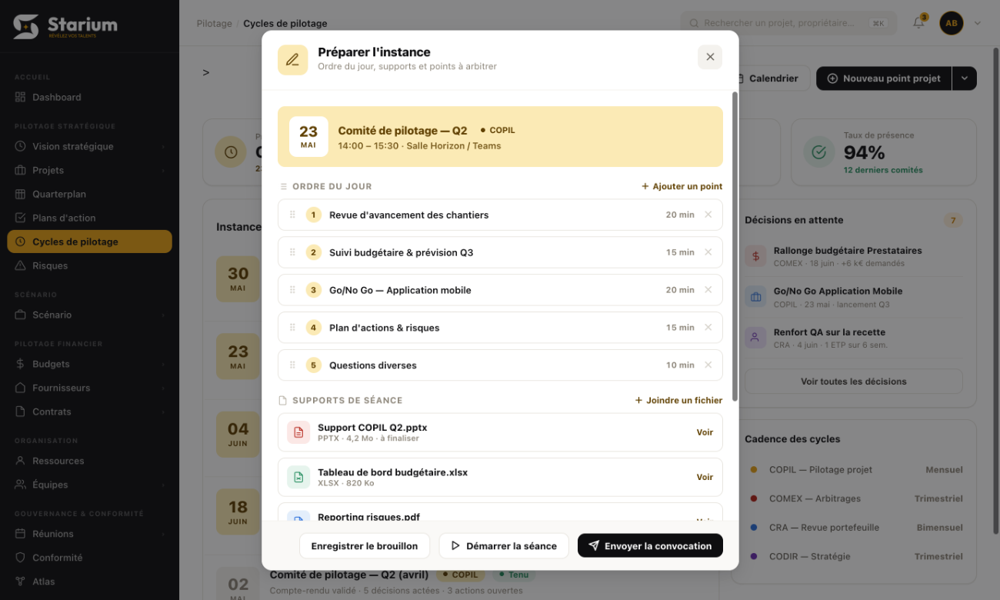
Même écran de préparation, atteint depuis la vue transverse. La différence tient au contenu consolidé, pas à l'interface.
Lien « Préparer » depuis la liste des cycles.
Ordre du jour prêt, séance animable.
Identiques à l'écran de préparation projet (08).
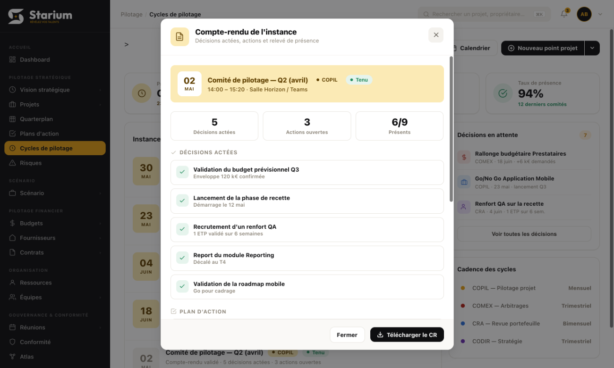
Restitution d'une séance close : ce qui a été décidé et ce qui en découle. Écran de lecture, jamais d'édition.
Lien « Consulter » depuis l'historique.
Lecture seule. Les actions vivent dans le plan d'action projet.
Un rectificatif éventuel est signalé en tête du compte-rendu.
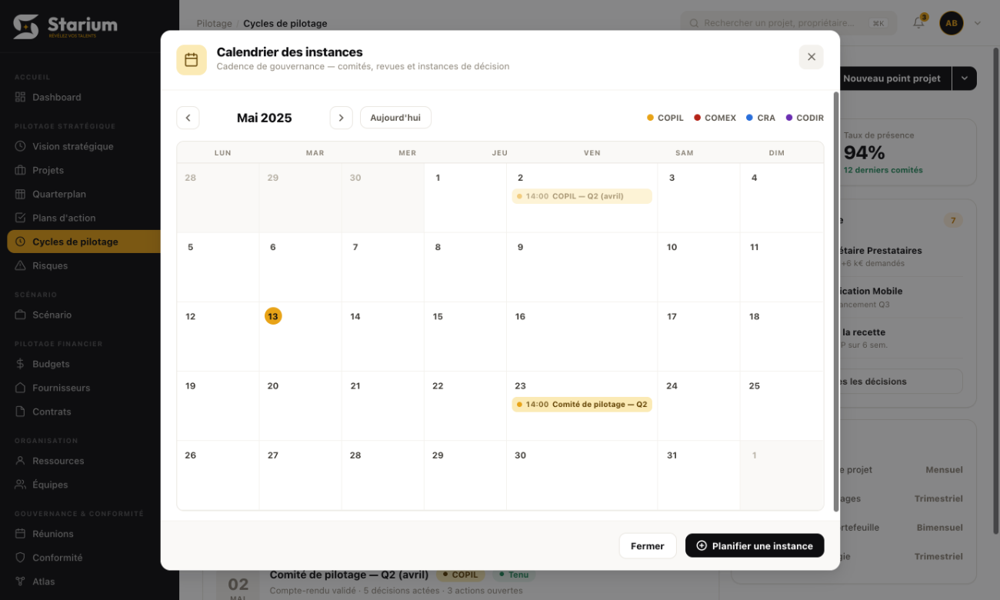
Vue mensuelle de la cadence de gouvernance. Sert d'appui à la planification : on choisit une date en voyant la charge réelle.
Bouton « Calendrier » de la vue Cycles de pilotage.
Lecture, ouverture d'une instance, ou création à la date choisie.
Mois sans instance affiché vide, sans message d'erreur.